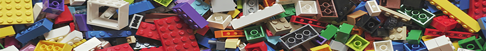

Types of Toys
Toys come in an incredible variety of types, each designed to entertain, educate, and inspire in its own unique way. Educational toys such as puzzles, building kits, and science experiments help develop critical thinking and problem-solving skills, often without the child even realizing they’re learning. Imaginative play toys, like dolls, action figures, and playsets, encourage storytelling and emotional development by allowing children to explore different roles and scenarios. These toys serve as tools for self-expression and creativity, helping young minds make sense of the world around them.
Other toys focus on movement, coordination, and outdoor exploration. Active toys like jump ropes, balls, and ride-ons promote physical fitness and motor skill development, making them essential for growing bodies. Sensory toys with bright colors, textures, and sounds stimulate curiosity and help with early cognitive growth, especially for toddlers and younger children. No matter the type, each toy fulfills a vital function — sparking curiosity, teaching skills, or simply bringing joy — proving that play is one of the most important parts of growing up.
Educational Toys

Educational toys are designed to blend learning with fun, making them a powerful tool in a child's development. These toys often come in the form of puzzles, building sets, counting games, science kits, or interactive books — all crafted to encourage exploration and curiosity. By turning complex concepts into hands-on experiences, educational toys help children build foundational skills in math, language, science, and logic in ways that feel natural and engaging. They promote independent thinking, build confidence through problem-solving, and often introduce early STEM (Science, Technology, Engineering, and Math) principles in playful, approachable ways.
Benefits of Educational Toys
- Develop critical thinking and problem-solving skills
- Strengthen fine motor coordination
- Encourage curiosity and exploration
- Support early math, science, and language learning
- Promote independent and self-guided learning
Outdoor Toys
Outdoor toys play a vital role in encouraging physical activity and healthy development. From jump ropes and balls to scooters, kites, and water blasters, these toys motivate children to move, explore, and interact with their environment. Outdoor play helps build strong muscles and bones while also offering an important outlet for energy. Many outdoor toys also encourage social interaction, whether it’s playing catch, racing bikes, or building sandcastles with friends. These types of toys help children develop coordination, teamwork, and a sense of adventure — all while enjoying the fresh air and sunshine.
Benefits of Outdoor Toys:
- Promote physical fitness and healthy habits
- Strengthen gross motor skills and coordination
- Encourage imaginative and unstructured play
- Support social interaction and teamwork
- Reduce screen time and increase time spent in nature
Popular Toy Types
Toys come in countless forms, but a few classic types continue to stand out as favorites across generations. These popular toy categories have earned their place in the spotlight by offering rich, lasting play experiences. Whether sparking a child’s imagination, encouraging hands-on problem solving, or bringing families together for fun, these toys provide more than just entertainment — they foster development, creativity, and connection. Below is a closer look at five of the most popular types of toys and the unique joy each one brings to children of all ages.
Top 5 Most Popular Toy Types
- Action Figures
- Character-based toys that spark imaginative adventures, often inspired by movies, comics, or games.
- Building Sets
- Toys like blocks or construction kits that encourage creativity, problem-solving, and spatial reasoning.
- Board Games
- Classic games that bring families and friends together while teaching strategy, patience, and teamwork.
- Dolls
- Versatile toys that support nurturing play, role-playing, and emotional expression.
- Remote-Controlled Vehicles
- Fast and interactive toys that develop hand-eye coordination and provide thrilling outdoor fun.